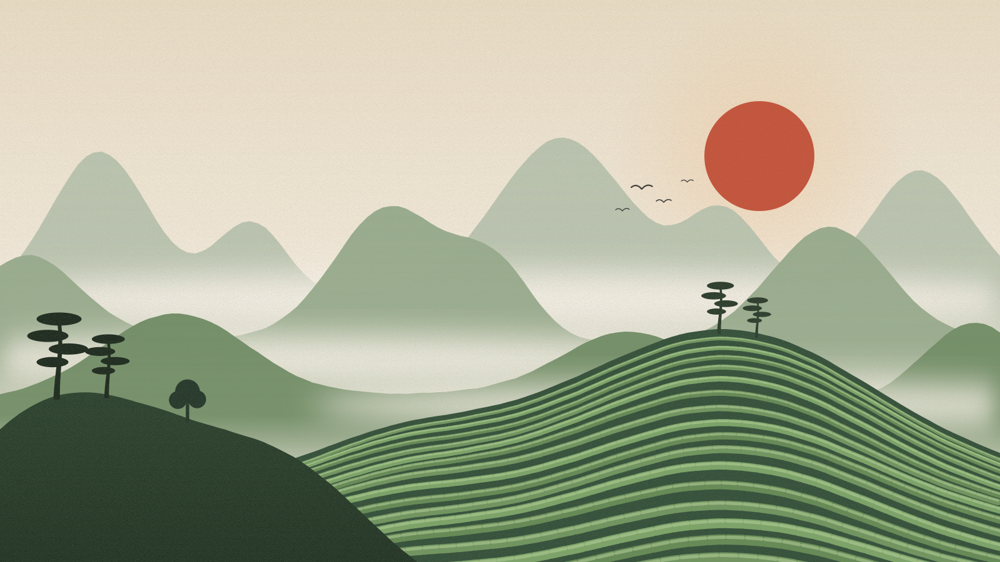
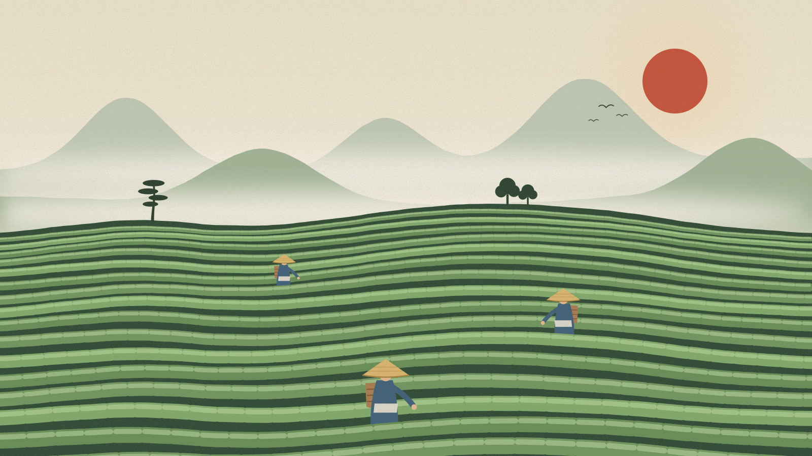
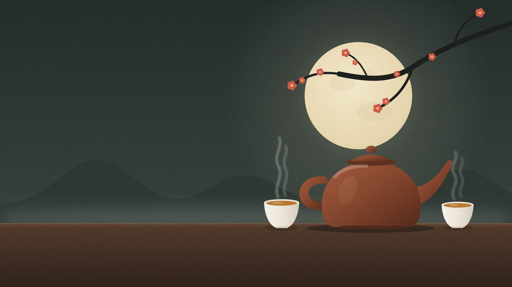
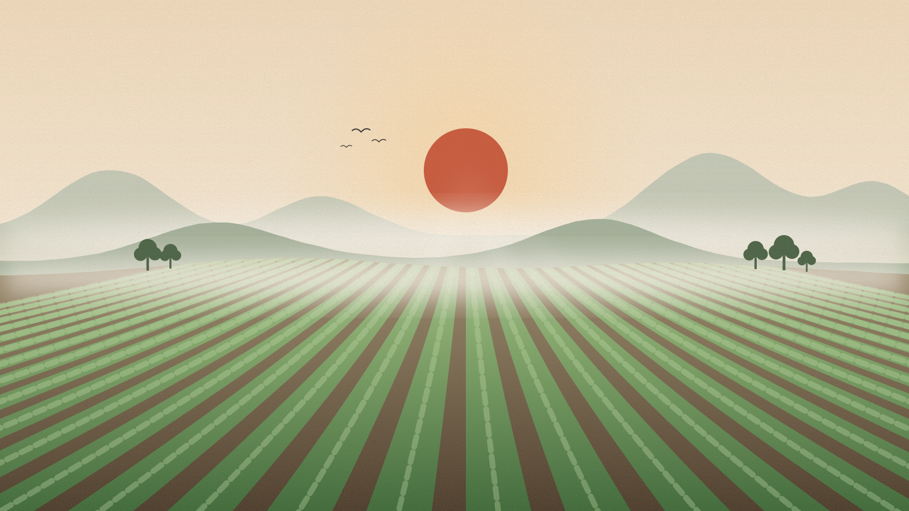
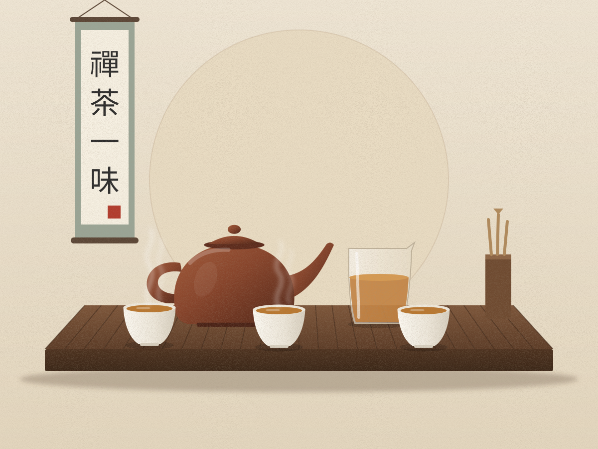

高山云雾出好茶
中国是茶的故乡。从云南到浙江，千里茶山孕育了上千种各具风味的名茶。

一芽一叶，皆是春天
明前茶嫩，雨前茶香。采茶人指尖轻提，摘下一年中最鲜嫩的那抹绿。

一壶月色，半盏清欢
宜兴紫砂壶透气而不透水，泡茶不失原味，自明代起便是文人案头的雅物。
湖畔煮茶，以茶会友
从唐代的茶宴到今天的围炉煮茶，饮茶始终是中国人亲近自然、联络情谊的方式。
SIX TYPES OF TEA
六大茶类
按照加工工艺和发酵程度的不同，中国茶可以分为六大基本茶类。点击卡片查看该类名茶。
绿
绿茶
不发酵清汤绿叶，鲜爽回甘。鲜叶经高温杀青保留了天然的绿色，是我国产量最大、历史最悠久的茶类。
代表：西湖龙井 · 碧螺春
查看 →
白
白茶
微发酵不炒不揉，只经萎凋和干燥，最大程度保留茶叶本味。民间有“一年茶，三年药，七年宝”的说法。
代表：白毫银针 · 白牡丹
查看 →
黄
黄茶
轻发酵独特的“闷黄”工艺让茶叶呈现黄叶黄汤，滋味甘醇鲜爽，是六大茶类中产量最少的一类。
代表：君山银针 · 霍山黄芽
查看 →
青
青茶（乌龙茶）
半发酵经过摇青做出“绿叶红镶边”，兼具绿茶的清香和红茶的醇厚，香气馥郁，耐冲泡。
代表：铁观音 · 大红袍
查看 →
红
红茶
全发酵红汤红叶，甜醇温润。正山小种被认为是世界红茶的鼻祖，如今红茶是全球饮用最广泛的茶类。
代表：祁门红茶 · 正山小种
查看 →
黑
黑茶
后发酵经渥堆发酵，汤色红浓、滋味醇和，适合长期存放，越陈越香，曾是茶马古道上的主要商品。
代表：普洱熟茶 · 安化黑茶
查看 →
FROM LEAF TO CUP
一杯茶的旅程
从山间的一片嫩叶，到手中的一盏清茶
-

壹茶园 · 种植
茶树喜温暖湿润，多生长在云雾缭绕的山坡上。海拔、土壤与气候，共同决定了一杯茶的品质。
-
贰
采摘 · 制茶
鲜叶采下后，经过萎凋、杀青、揉捻、发酵、干燥等工序的不同组合，形成风味各异的六大茶类。
-

叁冲泡 · 品饮
好茶还需好水、好器。观汤色、闻茶香、品滋味，一杯茶里有山川草木，也有人情冷暖。